平成27年度TOPICS
■2016年3月10日（木）「小型ポンプ運転要領講習会」
今回は東京物産株式会社埼玉営業所の小野寺所長をお招きして、実機を用いた小型ポンプの運転要領について講義していただきました。本講習に際し、予想以上に多くの団員が平日の夜にも関わらず集まりました。講義内容も非常にわかりやすく丁寧な説明で、多くの団員が食い入るように聴講しており、ポンプ操法にも関わる内容になるとさらに真剣な眼差しでした。あいにく途中で雨が降り出しましたが、それでも講師は熱心に教えていただいたおかげで、講習修了後には「とてもわかりやすく、興味深い講義だった」と好評でした。今後もさらなる器具愛護とスキルアップを図るため、定期的に講習会を開催していければと思います。
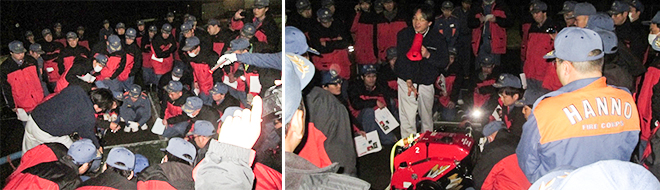
□平成28年3月11日 第2分団活動情報「操法大会の練習」を追加しました。
□平成28年3月3日 第10分団活動情報「吾野地区体育祭」他を追加しました。
□平成28年3月2日 第7分団活動情報「分団対抗ソフトボール大会」を追加しました。
□平成28年2月25日 第6分団3部活動情報「詰所片付け」を追加しました。
■平成28年2月3日（水）～5日（金） 第15回消防団幹部候補中央特別研修（東京虎ノ門）
日本消防 協会にて第15回消防団幹部候補中央特別研修が行われ、飯能消防団から加藤洋平団本部班長が参加しました。全国各地から130人以上の消防団員が集まる3 日間の研修では、頻発する大規模災害の実例と最新の研究成果や、近年の社会情勢から期待される消防団のあり方について学びました。最終日にはグループに分 かれての研究発表も行われ、各地域で活躍する団員と意見を交わしあう、充実した研修となりました。
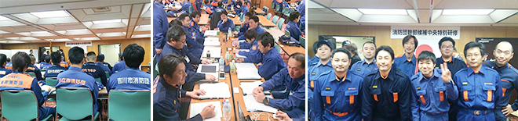
□平成28年2月12日 第9分団「出初式」「文化財防災訓練」を追加しました。
□平成28年2月10日 第4分団「分団旅行、東京臨海広域防災公園」等を追加しました。
■平成28年1月10日（日）飯能消防団出初式
昨年11月末の特別点検に引き続き、多数のご来賓の皆さまに見守られながら飯能消防団出初式が盛大に執り行うことができました。この日も素晴らしい天候に恵まれ、整列や答礼といったひとつひとつの動作も朝の凛とした寒さの中で一段と引き締まったように感じました。歳末特別警戒も無事に終え、新しい年を迎えたことで気が緩みがちになりますが、飯能消防団はより一層気を引き締めていきたいと思います。
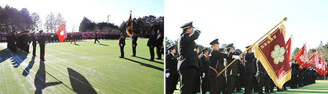
□平成28年1月22日 第1分団活動情報「出初式」を追加しました。
□平成28年1月7日 第6分団活動情報「歳末特別警戒」を追加しました。
■平成27年12月26日（土）歳末特別警戒激励巡視
埼玉県消防協会埼玉西部支部の梨木支部長、和田・井上副支部長をはじめ、飯能警察署鈴木副署長、飯能日高消防署松本署長により日高市消防団第2分団と飯能消防団第8分団1部へ歳末特別警戒の激励巡視が行われました。
飯能消防団第8分団1部には、大久保市長、野田消防組合議長、砂長消防組合議員も駆けつけていただきまして、激励いただきました。併せて新しくなった日高市消防団第2分団と飯能消防団第8分団1部の視察が行われました。
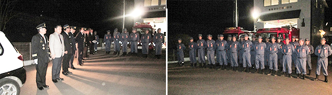
□平成28年1月7日 第8分団活動情報「特別点検」他を追加しました。
□平成28年1月7日 第3分団活動情報「特別点検」を追加しました。
□平成28年1月7日 第11分団活動情報「特別点検」を追加しました。
□平成28年1月7日 第7分団活動情報「特別点検」を追加しました。
□平成27年12月9日 第2分団活動情報「特別点検」を追加しました。
□平成27年12月7日 第6分団活動情報「特別点検」を追加しました。
□平成27年12月7日 第9分団活動情報「中継送水訓練」「特別点検」を追加しました。
■平成27年11月28日（土）飯能消防団特別点検
秋晴れの下、恒例によります飯能消防団特別点検が、多数のご来賓のご臨席を賜り、盛大に挙行できました。本日の出動人員は346名で、総員374名に対し92.5%の高率でありました。大久保点検官からの講評では、第4分団と第7分団の出動人員が100%であり優秀と認められました。また、小隊・中隊訓練は極めて優秀で、特に第9分団小峰分団長の士気は極めて旺盛で優秀と認められました。最良分団は第9分団、準優良分団は第3分団。機械器具手入れ優良分団は第7分団でした。本点検の結果は、極めて優秀と認められました。
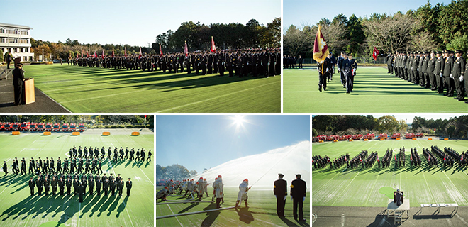
□平成27年12月2日 は組活動情報「消防特別点検」を追加しました。
□平成27年11月26日 は組活動情報「特別点検予習」を追加しました。
□平成27年11月26日 第3分団活動情報「飯能まつり警備」を追加しました。
■平成27年11月22日（日）消防特別点検予習
消防特別点検予習は、寒い中でしたが、良い緊張感の中、特別点検の一連の流れを無事に行うことができました。28日（土）の特別点検は、日頃の訓練の成果を発揮し、素晴らしい日にしましょう。
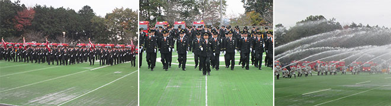
□平成27年11月17日 は組活動情報「飯能まつりオープニングパレード」を追加しました。
□平成27年11月10日 第4分団活動情報「全団員訓練」等を追加しました。
□平成27年11月5日 は組活動情報「全国女性消防団員活性化佐賀大会 」を追加しました。
□平成27年10月28日 第2分団活動情報「救命講習」「全団員訓練」を追加しました。
□平成27年10月28日 第8分団活動情報「新車両納車」を追加しました。
□平成27年10月28日 第10分団活動情報「2部詰所シャッター塗装」を追加しました。
□平成27年10月15日 第8分団活動情報「原市場体育祭駐車場整理」を追加しました。
□平成27年10月15日 第11分団活動情報「第11分団10周年記念祝賀会」を追加しました。
□平成27年10月8日 第3分団活動情報「六地区合同防災訓練」を追加しました。
□平成27年10月8日 第6分団活動情報「加治体育祭展示操法」を追加しました。
□平成27年10月8日 第10分団活動情報「合同中継送水訓練」等を追加しました。
■平成27年9月27日（日） 住宅用 火災警報器 設置推進 指導員 研修会
埼玉西部 支から 5名（ 飯能団 3名、 日高団 2名参加 しました。 地域における住宅用 火災警報器 の設置推進 について、消防団員は、 消防本部・消防署に協力し、地域 に密着した活動 を行う必要 があり、そのため、 住宅防火 について住民 へ啓発するとともに、 全世帯への住宅用火災警報器の早期設置を実現するために、 地域の自治会や地域 団体と協力した取り組みを行うことが求められております。
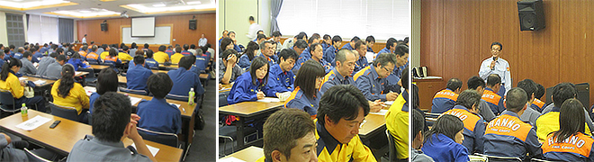
□平成27年9月7日 第9分団活動情報「中継送水訓練」を追加しました。
□平成27年9月4日 第8分団活動情報「1部車庫シャッター完成」を追加しました。
□平成27年9月2日 第2分団活動情報「町内自主防災」を追加しました。
□平成27年8月28日 第6分団活動情報「はんなーらサマーフェスタ」を追加しました。
□平成27年8月19日 は組活動情報「飯能リハビリ館防火活動」を追加しました。
■平成27年8月9日（日）埼玉西部支部の基礎教育
飯能日高消防署員のご協力を頂き、埼玉西部支部の基礎教育（飯能消防団19名、日高市消防団15名）を受講して頂きました。屋内訓練場では、巻き結びやもやい結びのロープの使い方（結索）や訓練礼式等の実技訓練を行いました。講義では、消防団の組織制度や火災防御の教育学科を受講して頂きました。皆さん真剣なまなざしで受講されておりました。
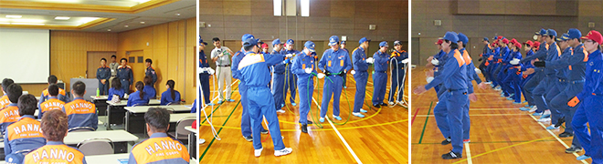
□平成27年8月17日 第7分団活動情報「翌年の操法大会練習開始」を追加しました。
□平成27年8月3日 第4分団活動情報「中継送水訓練」等を追加しました。
□平成27年8月3日 は組活動情報「埼玉県女性消防団員大会」を追加しました。
□平成27年7月22日 第6分団活動情報「家族慰安BBQ」を追加しました。
□平成27年7月21日 第3分団活動情報「中継送水訓練」を追加しました。
□平成27年7月21日 第9分団活動情報「中継送水訓練」等を追加しました。
□平成27年7月14日 第2分団活動情報「中継送水訓練」を追加しました。
□平成27年7月14日 第1分団活動情報「中継送水訓練」等を追加しました。
□平成27年7月14日 第11分団活動情報「入団式」「中継送水訓練」を追加しました。
□平成27年7月7日 第5分団活動情報「土砂災害・全国防災訓練」を追加しました。
■平成27年6月16日（火）緊急走行講習会及びポンプ運用説明会
自動車安全運転センター安全運転中央研修所において、一般緊急車両運転技能者課程を修了した消防職員が講師となり、消防団員を対象に実施しました。緊急走行することは自然の交通状態の流れを止め、一時的に麻痺させている事を再認識いたしました。必ず現場到着し活動するのが使命であること、また、自分の運転をするのではなく、人を乗せている運転をするとともに自家用車を運転するときよりも、危険予測した運転に乗車している方全員で確認し走行することが大切ということを教えていただきました。ポンプ運用説明会も消防職員が講師となり、普段使用しているポンプの座学で、放水原理を学ぶことにより、理論的にポンプの運用を考えるよいきっかけとなりました。
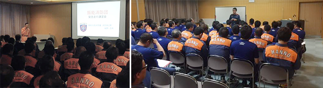
□平成27年6月15日 は組 活動情報「ツーデーマーチ」を追加しました。
□平成27年6月15日 第5分団 活動情報「ツーデーマーチ警備」を追加しました。
■平成27年6月7日(日) 平成27年度 土砂災害・全国防災訓練
いざという時に適切な対応がとれるよう、今年度も地域の皆さんと国・県・市・関係機関が連携し、大雨による大規模な土砂災害を想定した対応訓練を行いました。 市災害対策本部の立ち上げから、情報収集・連絡、避難情報の発令・伝達など、一連の流れを確認するロールプレイング訓練を行いました。情報共有に係る新たな課題なども明らかになり、有意義な訓練となりました。消防団は、心肺蘇生法や広報活動で避難誘導等を実施しました。山間部の地域の皆さんをはじめ、警察、消防、消防団、自衛隊など、参加者総数3,596人となりました。大変お疲れ様でした。
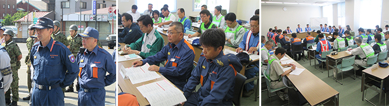
□平成27年6月8日 第7分団 活動情報「救助資機材取扱訓練」「ツーデーマーチ警備」を追加しました。
□平成27年6月5日 第6分団 活動情報「ツーデーマーチ警備」を追加しました。
□平成27年6月1日 第4分団 活動情報「全分団訓練」「ツーデーマーチ警備」を追加しました。
□平成27年6月1日 第3分団 活動情報「ツーデーマーチ警備」を追加しました。
□平成27年5月27日 第10分団 活動情報「後援会総会」「分団訓練、放水訓練」を追加しました。
□平成27年5月27日 第2分団 活動情報「ツーデーマーチ警備」を追加しました。
□平成27年5月12日 は組 活動情報「全団員訓練」を追加しました。
□平成27年5月12日 第10分団 活動情報「新入団員紹介」を追加しました。
□平成27年5月12日 第6分団 活動情報「全団員訓練」を追加しました。
□平成27年5月12日 第5分団 活動情報「救助資機材訓練」を追加しました。
□平成27年5月12日 第2分団 活動情報「歓送迎会」「分団訓練」を追加しました。
■平成27年5月10日（日）分団訓練
加藤飯能市議会議長、野田埼玉西部消防組合議会議長が激励に来ていただいた中で分団訓練を実施しました。訓練は入場行進、観閲、服装規律などを実施しました。また、分団毎に飯能日高消防署屋外訓練場で救助資機材を使った訓練や放水訓練、地元に帰っての放水訓練等、有意義で内容の濃い日となったと思います。
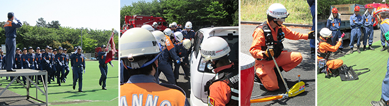
□平成27年5月1日 第4分団 活動情報「入団式」等を追加しました。
□平成27年4月30日 第9分団 活動情報「入団式」を追加しました。
□平成27年4月23日 第3分団 活動情報「入団式」を追加しました。
□平成27年4月5日 第7分団 活動情報「入団式」を追加しました。
■平成27年4月5日（日）入団式
飯能日高消防署で平成27年度飯能消防団入団式が行われました。64名の昇格・異動があり、新たに入団した22名の新入団員には、梨木幹雄団長から辞令が交付されました。入団式の後には消防団員の基本となる礼式や操法訓練を実施しました。
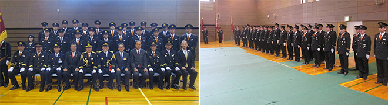